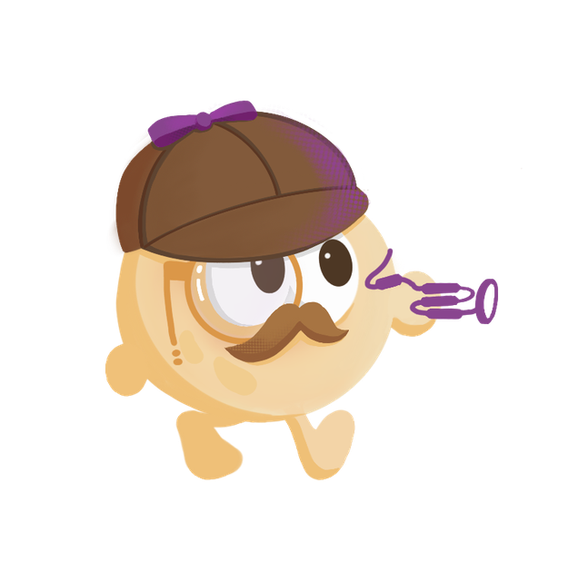

Nankai University · iGEM 2026
The soil is hiding something.
Two microscopic nematodes can damage crops underground, invisibly, and often before the field shows symptoms. We are engineering a biosensor that names them before the damage shows.
Move your cursor across the soil - something is down there.
01 - The case
A pest you never see, on a bill you always pay.
Plant-parasitic nematodes are among the most overlooked threats in agriculture. They live in the soil, feed on roots, and can spread before symptoms reach the surface. This section frames the project case and leaves a clear slot for final burden-of-disease evidence and regional context.
02 - How detection works
Three moves from a clod of soil to a clear answer.
Our detector reads the molecular fingerprints these nematodes leave in soil and turns them into a signal anyone can interpret in the field - no lab, no microscope, no PhD required.
03 - The casebook
Open the wiki.
Everything we did, evidenced and cross-referenced. Start anywhere.
Description
The problem, the suspects, and the idea that catches them.
Contribution
What we leave for future teams to reuse and extend.
Engineering
Design-build-test-learn, cycle by documented cycle.
Model
The assumptions, predictions, and design feedback from dry lab.
Human Practices
Results
What the detector actually did at the bench.

04 - The investigator
Meet our detective.
Every good case needs a sharp eye. Ours wears a deerstalker, carries a magnifying glass, and never lets a nematode slip past unnoticed - the face of a project about seeing the unseen.
Behind the mascot is a team of Nankai University students from the life sciences and beyond, who spent a year turning a soil problem into a piece of synthetic biology.